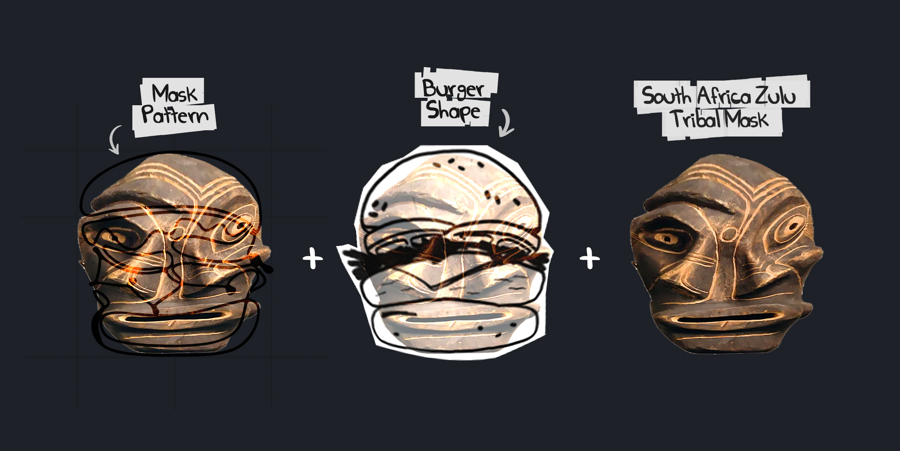

The Story
The shop owner who is South Africans Tribe people live in UK, started as a hamburger restaurant at city of Cotswolds after moving to the town. The client needed a revamp brand identity to convey the message of the merge between traditional rustic tasty and community to transmit to it's costumers. Has set the pleasurable experience for the new places that offer burger food in the community.
Logotype Walk Through
The name "2nd" comes from the expression "Night-to-day" as the name implies shop owner said. I wanted to reflect the casual in the night time. The fluidity of the line movements served as a great inspiration when designing the brand's logo. The south africa tribe mask is one of the most important elements. So, The main idea of the logo was mixing tribe mask and burger outline, and also emphasize "Nightly + Relax" of brand personality with casual and fluid hand-sketching outline. A bold font high contrast was perfect for it.
Packing
A trendy and laconic packaging design made the product visually striking. Fabula Branding used a typographic play on letter spacing to create the logo. Cooking methods were explained by using a yummy food zone.
It's night blue color seek to generate emotions such as Night, enthusiasm and joy.
Instagram Campaigns Visual